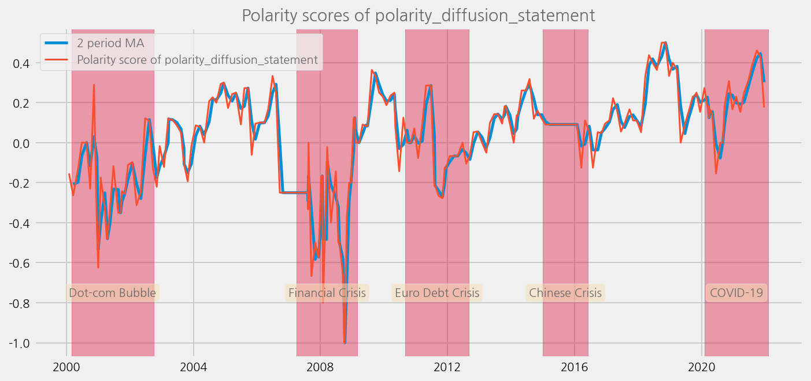
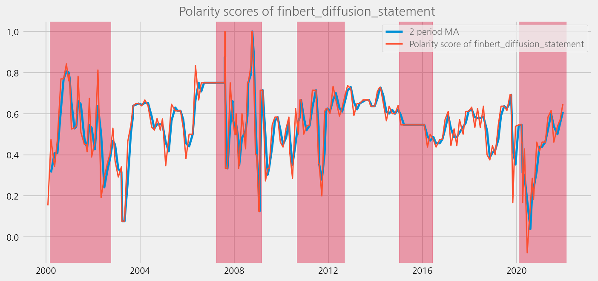
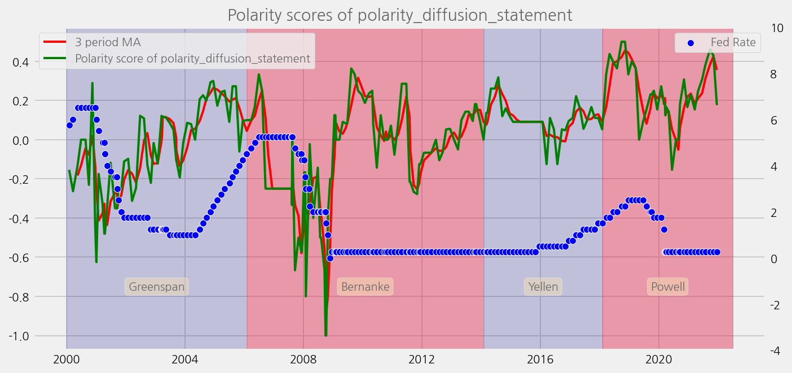
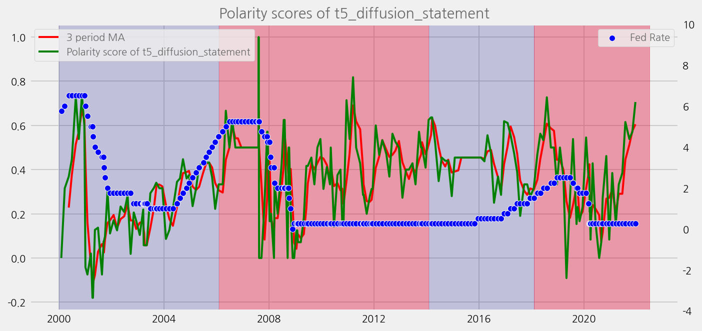
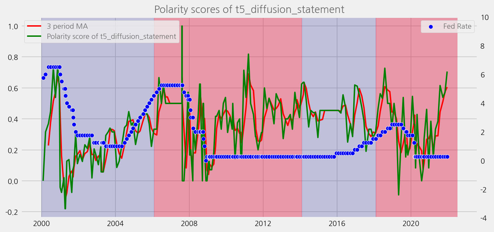
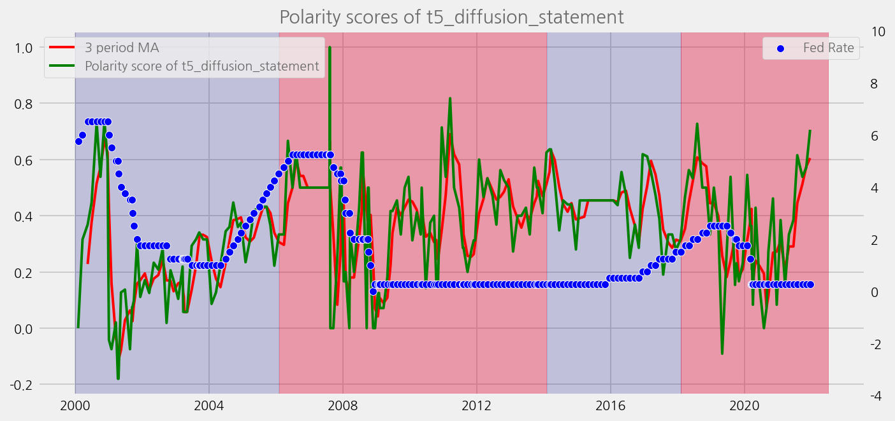
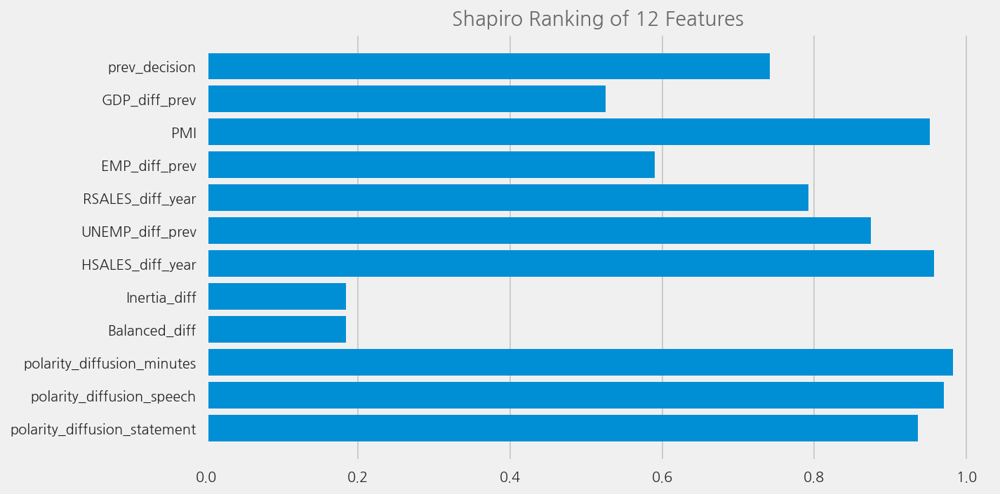
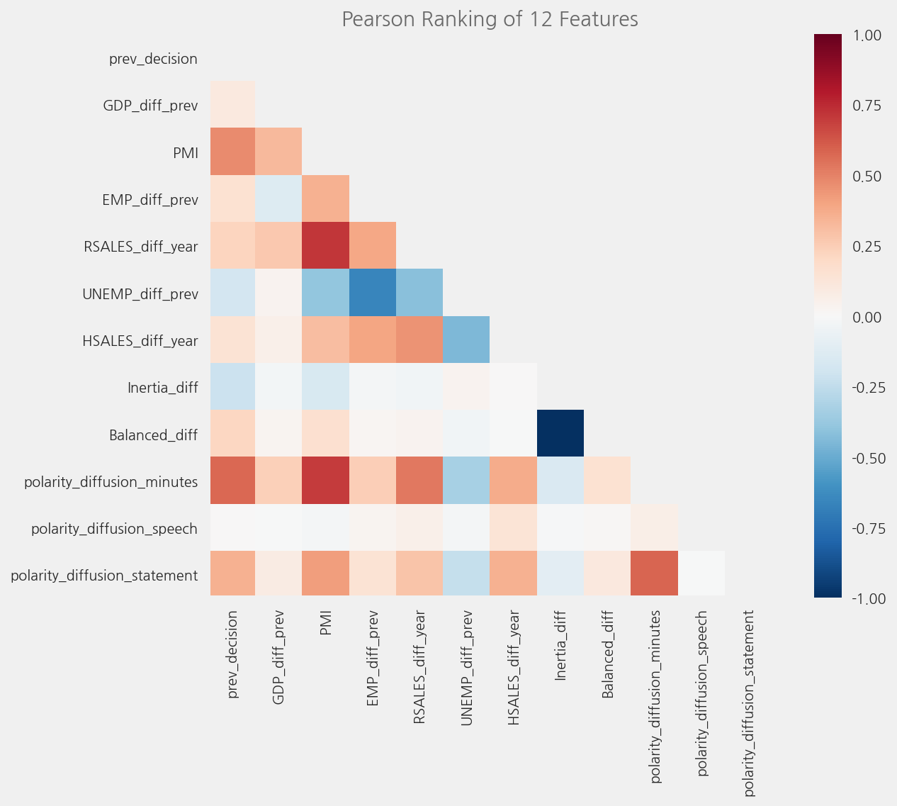

EDA on Sentiment Data
Contents
EDA on Sentiment Data¶
Analyse statement by Loughran and McDonald dictionary
%config InlineBackend.figure_format='retina'
import logging
from ekorpkit import eKonf
logging.basicConfig(level=logging.WARNING)
print("version:", eKonf.__version__)
print("is notebook?", eKonf.is_notebook())
print("is colab?", eKonf.is_colab())
print("evironment varialbles:")
eKonf.print(eKonf.env().dict())
version: 0.1.33+28.g90d1dea
is notebook? True
is colab? False
evironment varialbles:
{'EKORPKIT_CONFIG_DIR': '/workspace/projects/ekorpkit-book/config',
'EKORPKIT_DATA_DIR': None,
'EKORPKIT_PROJECT': 'ekorpkit-book',
'EKORPKIT_WORKSPACE_ROOT': '/workspace',
'NUM_WORKERS': 230}
start_year = 2000
data_dir = "../data/fomc"
eKonf.env().FRED_API_KEY
pydantic.types.SecretStr
Load datasets¶
tone_data_lm = eKonf.load_data('fomc_tone_data_lm.parquet', data_dir)
tone_data_lm
| polarity_mean_beigebook | polarity_mean_meeting_script | polarity_mean_minutes | polarity_mean_press_conf | polarity_mean_speech | polarity_mean_statement | polarity_mean_testimony | polarity_diffusion_beigebook | polarity_diffusion_meeting_script | polarity_diffusion_minutes | ... | num_tokens_sum_speech | num_tokens_sum_statement | num_tokens_sum_testimony | num_tokens_mean_beigebook | num_tokens_mean_meeting_script | num_tokens_mean_minutes | num_tokens_mean_press_conf | num_tokens_mean_speech | num_tokens_mean_statement | num_tokens_mean_testimony | |
|---|---|---|---|---|---|---|---|---|---|---|---|---|---|---|---|---|---|---|---|---|---|
| date | |||||||||||||||||||||
| 1990-02-07 | NaN | -0.087583 | NaN | NaN | NaN | NaN | NaN | NaN | -0.095663 | NaN | ... | NaN | NaN | NaN | NaN | 30.213010 | NaN | NaN | NaN | NaN | NaN |
| 1990-03-27 | NaN | -0.171992 | NaN | NaN | NaN | NaN | NaN | NaN | -0.179702 | NaN | ... | NaN | NaN | NaN | NaN | 29.846369 | NaN | NaN | NaN | NaN | NaN |
| 1990-05-15 | NaN | -0.116052 | NaN | NaN | NaN | NaN | NaN | NaN | -0.125461 | NaN | ... | NaN | NaN | NaN | NaN | 29.749077 | NaN | NaN | NaN | NaN | NaN |
| 1990-07-03 | NaN | -0.114829 | NaN | NaN | NaN | NaN | NaN | NaN | -0.117794 | NaN | ... | NaN | NaN | NaN | NaN | 29.667920 | NaN | NaN | NaN | NaN | NaN |
| 1990-08-21 | NaN | -0.209552 | NaN | NaN | NaN | NaN | NaN | NaN | -0.219403 | NaN | ... | NaN | NaN | NaN | NaN | 31.032836 | NaN | NaN | NaN | NaN | NaN |
| ... | ... | ... | ... | ... | ... | ... | ... | ... | ... | ... | ... | ... | ... | ... | ... | ... | ... | ... | ... | ... | ... |
| 2021-11-30 | NaN | NaN | NaN | NaN | -0.167014 | NaN | -0.12 | NaN | NaN | NaN | ... | 3066.0 | NaN | 556.0 | NaN | NaN | NaN | NaN | 31.937500 | NaN | 27.8 |
| 2021-12-01 | -0.046022 | NaN | NaN | NaN | NaN | NaN | NaN | -0.048109 | NaN | NaN | ... | NaN | NaN | NaN | 22.539497 | NaN | NaN | NaN | NaN | NaN | NaN |
| 2021-12-02 | NaN | NaN | NaN | NaN | -0.077381 | NaN | NaN | NaN | NaN | NaN | ... | 6514.0 | NaN | NaN | NaN | NaN | NaN | NaN | 36.188889 | NaN | NaN |
| 2021-12-15 | NaN | NaN | -0.043929 | -0.075441 | NaN | 0.166667 | NaN | NaN | NaN | -0.064286 | ... | NaN | 489.0 | NaN | NaN | NaN | 30.521429 | 37.587413 | NaN | 27.166667 | NaN |
| 2021-12-17 | NaN | NaN | NaN | NaN | -0.356613 | NaN | NaN | NaN | NaN | NaN | ... | 3694.0 | NaN | NaN | NaN | NaN | NaN | NaN | 29.317460 | NaN | NaN |
1876 rows × 35 columns
tone_data_finbert = eKonf.load_data('fomc_tone_data_finbert.parquet', data_dir)
cols = [
'polarity_mean_minutes', 'polarity_mean_press_conf', 'polarity_mean_speech', 'polarity_mean_statement',
'polarity_diffusion_minutes', 'polarity_diffusion_press_conf', 'polarity_diffusion_speech', 'polarity_diffusion_statement',
]
tone_data_finbert = tone_data_finbert[cols].copy()
tone_data_finbert.columns = tone_data_finbert.columns.str.replace('polarity', 'finbert')
tone_data_finbert
| finbert_mean_minutes | finbert_mean_press_conf | finbert_mean_speech | finbert_mean_statement | finbert_diffusion_minutes | finbert_diffusion_press_conf | finbert_diffusion_speech | finbert_diffusion_statement | |
|---|---|---|---|---|---|---|---|---|
| date | ||||||||
| 1990-02-07 | NaN | NaN | NaN | NaN | NaN | NaN | NaN | NaN |
| 1990-03-27 | NaN | NaN | NaN | NaN | NaN | NaN | NaN | NaN |
| 1990-05-15 | NaN | NaN | NaN | NaN | NaN | NaN | NaN | NaN |
| 1990-07-03 | NaN | NaN | NaN | NaN | NaN | NaN | NaN | NaN |
| 1990-08-21 | NaN | NaN | NaN | NaN | NaN | NaN | NaN | NaN |
| ... | ... | ... | ... | ... | ... | ... | ... | ... |
| 2021-11-30 | NaN | NaN | 0.182338 | NaN | NaN | NaN | 0.239583 | NaN |
| 2021-12-01 | NaN | NaN | NaN | NaN | NaN | NaN | NaN | NaN |
| 2021-12-02 | NaN | NaN | 0.262141 | NaN | NaN | NaN | 0.338889 | NaN |
| 2021-12-15 | 0.509806 | 0.280516 | NaN | 0.412947 | 0.675 | 0.377622 | NaN | 0.555556 |
| 2021-12-17 | NaN | NaN | 0.408242 | NaN | NaN | NaN | 0.547619 | NaN |
1876 rows × 8 columns
tone_data_t5 = eKonf.load_data('fomc_tone_data_t5.parquet', data_dir)
cols = [
'polarity_diffusion_minutes', 'polarity_diffusion_press_conf', 'polarity_diffusion_speech', 'polarity_diffusion_statement',
]
tone_data_t5 = tone_data_t5[cols].copy()
tone_data_t5.columns = tone_data_t5.columns.str.replace('polarity', 't5')
tone_data_t5
| t5_diffusion_minutes | t5_diffusion_press_conf | t5_diffusion_speech | t5_diffusion_statement | |
|---|---|---|---|---|
| date | ||||
| 1990-02-07 | NaN | NaN | NaN | NaN |
| 1990-03-27 | NaN | NaN | NaN | NaN |
| 1990-05-15 | NaN | NaN | NaN | NaN |
| 1990-07-03 | NaN | NaN | NaN | NaN |
| 1990-08-21 | NaN | NaN | NaN | NaN |
| ... | ... | ... | ... | ... |
| 2021-11-30 | NaN | NaN | 0.239583 | NaN |
| 2021-12-01 | NaN | NaN | NaN | NaN |
| 2021-12-02 | NaN | NaN | 0.250000 | NaN |
| 2021-12-15 | 0.403571 | 0.216783 | NaN | 0.444444 |
| 2021-12-17 | NaN | NaN | 0.174603 | NaN |
1876 rows × 4 columns
Correlation¶
cfg = eKonf.compose("io/fetcher/fomc")
cfg.output_dir = data_dir
fomc = eKonf.instantiate(cfg)
fomc.load_calendar(from_year=1982, force_download=False)
| unscheduled | forecast | confcall | speaker | rate | rate_change | rate_decision | rate_changed | |
|---|---|---|---|---|---|---|---|---|
| date | ||||||||
| 1982-10-05 | False | False | False | Paul Volcker | 9.50 | -0.50 | -1.0 | 1 |
| 1982-11-16 | False | False | False | Paul Volcker | 9.00 | -0.50 | -1.0 | 1 |
| 1982-12-21 | False | False | False | Paul Volcker | 8.50 | 0.00 | 0.0 | 0 |
| 1983-01-14 | False | False | True | Paul Volcker | 8.50 | 0.00 | 0.0 | 0 |
| 1983-01-21 | False | False | True | Paul Volcker | 8.50 | 0.00 | 0.0 | 0 |
| ... | ... | ... | ... | ... | ... | ... | ... | ... |
| 2021-11-03 | False | False | False | Jerome Powell | 0.25 | 0.00 | 0.0 | 0 |
| 2021-12-15 | False | True | False | Jerome Powell | 0.25 | 0.00 | 0.0 | 0 |
| 2022-01-26 | False | False | False | Jerome Powell | 0.25 | 0.00 | 0.0 | 0 |
| 2022-03-16 | False | True | False | Jerome Powell | 0.50 | 0.25 | 1.0 | 1 |
| 2022-05-04 | False | False | False | Jerome Powell | 1.00 | 0.50 | 1.0 | 1 |
415 rows × 8 columns
Merge with fed rate data¶
cfg = eKonf.compose('visualize/plot=lineplot')
cfg.plot.y = 'rate'
cfg.figure.figsize = (15, 8)
cfg.ax.title = 'Fed Rate'
eKonf.instantiate(cfg, data=fomc.calendar)

tone_data = tone_data_lm.merge(tone_data_finbert, left_index=True, right_index=True)
tone_data = tone_data.merge(tone_data_t5, left_index=True, right_index=True)
tone_data.index.name = 'date'
tone_data = tone_data[tone_data.index.year >= (start_year-1)]
tone_data
| polarity_mean_beigebook | polarity_mean_meeting_script | polarity_mean_minutes | polarity_mean_press_conf | polarity_mean_speech | polarity_mean_statement | polarity_mean_testimony | polarity_diffusion_beigebook | polarity_diffusion_meeting_script | polarity_diffusion_minutes | ... | finbert_mean_speech | finbert_mean_statement | finbert_diffusion_minutes | finbert_diffusion_press_conf | finbert_diffusion_speech | finbert_diffusion_statement | t5_diffusion_minutes | t5_diffusion_press_conf | t5_diffusion_speech | t5_diffusion_statement | |
|---|---|---|---|---|---|---|---|---|---|---|---|---|---|---|---|---|---|---|---|---|---|
| date | |||||||||||||||||||||
| 1999-01-03 | NaN | NaN | NaN | NaN | -0.106322 | NaN | NaN | NaN | NaN | NaN | ... | 0.290412 | NaN | NaN | NaN | 0.396552 | NaN | NaN | NaN | 0.146552 | NaN |
| 1999-01-04 | NaN | NaN | NaN | NaN | 0.207071 | NaN | NaN | NaN | NaN | NaN | ... | 0.291545 | NaN | NaN | NaN | 0.371212 | NaN | NaN | NaN | 0.318182 | NaN |
| 1999-01-11 | NaN | NaN | NaN | NaN | 0.166667 | NaN | NaN | NaN | NaN | NaN | ... | 0.304557 | NaN | NaN | NaN | 0.392857 | NaN | NaN | NaN | 0.307143 | NaN |
| 1999-01-15 | NaN | NaN | NaN | NaN | -0.086614 | NaN | NaN | NaN | NaN | NaN | ... | 0.214325 | NaN | NaN | NaN | 0.283465 | NaN | NaN | NaN | 0.110236 | NaN |
| 1999-01-20 | NaN | NaN | NaN | NaN | NaN | NaN | -0.052444 | NaN | NaN | NaN | ... | NaN | NaN | NaN | NaN | NaN | NaN | NaN | NaN | NaN | NaN |
| ... | ... | ... | ... | ... | ... | ... | ... | ... | ... | ... | ... | ... | ... | ... | ... | ... | ... | ... | ... | ... | ... |
| 2021-11-30 | NaN | NaN | NaN | NaN | -0.167014 | NaN | -0.120000 | NaN | NaN | NaN | ... | 0.182338 | NaN | NaN | NaN | 0.239583 | NaN | NaN | NaN | 0.239583 | NaN |
| 2021-12-01 | -0.046022 | NaN | NaN | NaN | NaN | NaN | NaN | -0.048109 | NaN | NaN | ... | NaN | NaN | NaN | NaN | NaN | NaN | NaN | NaN | NaN | NaN |
| 2021-12-02 | NaN | NaN | NaN | NaN | -0.077381 | NaN | NaN | NaN | NaN | NaN | ... | 0.262141 | NaN | NaN | NaN | 0.338889 | NaN | NaN | NaN | 0.250000 | NaN |
| 2021-12-15 | NaN | NaN | -0.043929 | -0.075441 | NaN | 0.166667 | NaN | NaN | NaN | -0.064286 | ... | NaN | 0.412947 | 0.675 | 0.377622 | NaN | 0.555556 | 0.403571 | 0.216783 | NaN | 0.444444 |
| 2021-12-17 | NaN | NaN | NaN | NaN | -0.356613 | NaN | NaN | NaN | NaN | NaN | ... | 0.408242 | NaN | NaN | NaN | 0.547619 | NaN | NaN | NaN | 0.174603 | NaN |
1644 rows × 47 columns
cols = [
'polarity_diffusion_minutes', 'polarity_diffusion_press_conf', 'polarity_diffusion_speech', 'polarity_diffusion_statement',
'finbert_diffusion_minutes', 'finbert_diffusion_press_conf', 'finbert_diffusion_speech', 'finbert_diffusion_statement',
't5_diffusion_minutes', 't5_diffusion_press_conf', 't5_diffusion_speech', 't5_diffusion_statement'
]
merged_tone_data = fomc.calendar.copy()
for name in cols:
offset = dict(months=0, days=1)
data = tone_data.dropna(subset=[name])
merged_tone_data = fomc.add_available_latest(
merged_tone_data, data, name, [name], offset
)
merged_tone_data = merged_tone_data[(merged_tone_data.index.year >= (start_year-1)) & (merged_tone_data.index.year < 2022)]
eKonf.save_data(merged_tone_data, "fomc_tone_data_merged.parquet", data_dir)
merged_tone_data
100%|██████████| 415/415 [00:00<00:00, 2219.39it/s]
100%|██████████| 415/415 [00:00<00:00, 3113.66it/s]
100%|██████████| 415/415 [00:00<00:00, 2122.97it/s]
100%|██████████| 415/415 [00:00<00:00, 2196.67it/s]
100%|██████████| 415/415 [00:00<00:00, 2199.55it/s]
100%|██████████| 415/415 [00:00<00:00, 3089.05it/s]
100%|██████████| 415/415 [00:00<00:00, 2105.87it/s]
100%|██████████| 415/415 [00:00<00:00, 2197.27it/s]
100%|██████████| 415/415 [00:00<00:00, 2148.77it/s]
100%|██████████| 415/415 [00:00<00:00, 3045.95it/s]
100%|██████████| 415/415 [00:00<00:00, 2081.96it/s]
100%|██████████| 415/415 [00:00<00:00, 2148.15it/s]
| unscheduled | forecast | confcall | speaker | rate | rate_change | rate_decision | rate_changed | polarity_diffusion_minutes | polarity_diffusion_minutes_date | ... | finbert_diffusion_statement | finbert_diffusion_statement_date | t5_diffusion_minutes | t5_diffusion_minutes_date | t5_diffusion_press_conf | t5_diffusion_press_conf_date | t5_diffusion_speech | t5_diffusion_speech_date | t5_diffusion_statement | t5_diffusion_statement_date | |
|---|---|---|---|---|---|---|---|---|---|---|---|---|---|---|---|---|---|---|---|---|---|
| date | |||||||||||||||||||||
| 1999-02-03 | False | False | False | Alan Greenspan | 4.75 | 0.00 | 0.0 | 0 | NaN | NaT | ... | NaN | NaT | NaN | NaT | NaN | NaT | 0.111111 | 1999-01-21 | NaN | NaT |
| 1999-03-30 | False | False | False | Alan Greenspan | 4.75 | 0.00 | 0.0 | 0 | -0.072464 | 1999-02-03 | ... | NaN | NaT | 0.405797 | 1999-02-03 | NaN | NaT | 0.187050 | 1999-03-25 | NaN | NaT |
| 1999-05-18 | False | False | False | Alan Greenspan | 4.75 | 0.00 | 0.0 | 0 | -0.050360 | 1999-03-30 | ... | NaN | NaT | 0.474820 | 1999-03-30 | NaN | NaT | 0.245509 | 1999-05-13 | NaN | NaT |
| 1999-06-30 | False | False | False | Alan Greenspan | 5.00 | 0.25 | 1.0 | 1 | -0.028169 | 1999-05-18 | ... | 1.000000 | 1999-05-18 | 0.514085 | 1999-05-18 | NaN | NaT | 0.097561 | 1999-06-22 | 0.625000 | 1999-05-18 |
| 1999-08-24 | False | False | False | Alan Greenspan | 5.25 | 0.25 | 1.0 | 1 | -0.059524 | 1999-06-30 | ... | 0.692308 | 1999-06-30 | 0.583333 | 1999-06-30 | NaN | NaT | 0.178947 | 1999-07-29 | 0.269231 | 1999-06-30 |
| ... | ... | ... | ... | ... | ... | ... | ... | ... | ... | ... | ... | ... | ... | ... | ... | ... | ... | ... | ... | ... | ... |
| 2021-06-16 | False | True | False | Jerome Powell | 0.25 | 0.00 | 0.0 | 0 | -0.040741 | 2021-04-28 | ... | 0.615385 | 2021-04-28 | 0.407407 | 2021-04-28 | 0.142012 | 2021-04-28 | 0.330709 | 2021-06-03 | 0.384615 | 2021-04-28 |
| 2021-07-28 | False | False | False | Jerome Powell | 0.25 | 0.00 | 0.0 | 0 | 0.031142 | 2021-06-16 | ... | 0.461538 | 2021-06-16 | 0.456747 | 2021-06-16 | 0.194737 | 2021-06-16 | 0.228070 | 2021-07-11 | 0.615385 | 2021-06-16 |
| 2021-09-22 | False | True | False | Jerome Powell | 0.25 | 0.00 | 0.0 | 0 | -0.069079 | 2021-07-28 | ... | 0.538462 | 2021-07-28 | 0.414474 | 2021-07-28 | 0.197674 | 2021-07-28 | 0.148148 | 2021-09-09 | 0.538462 | 2021-07-28 |
| 2021-11-03 | False | False | False | Jerome Powell | 0.25 | 0.00 | 0.0 | 0 | -0.112403 | 2021-09-22 | ... | 0.571429 | 2021-09-22 | 0.395349 | 2021-09-22 | 0.143695 | 2021-09-22 | 0.085714 | 2021-10-22 | 0.571429 | 2021-09-22 |
| 2021-12-15 | False | True | False | Jerome Powell | 0.25 | 0.00 | 0.0 | 0 | -0.080851 | 2021-11-03 | ... | 0.647059 | 2021-11-03 | 0.476596 | 2021-11-03 | 0.172619 | 2021-11-03 | 0.250000 | 2021-12-02 | 0.705882 | 2021-11-03 |
219 rows × 32 columns
cols = [
'polarity_diffusion_minutes', 'polarity_diffusion_press_conf', 'polarity_diffusion_speech', 'polarity_diffusion_statement',
'finbert_diffusion_minutes', 'finbert_diffusion_press_conf', 'finbert_diffusion_speech', 'finbert_diffusion_statement',
't5_diffusion_minutes', 't5_diffusion_press_conf', 't5_diffusion_speech', 't5_diffusion_statement'
]
diff_cols = []
for col in cols:
diff_col = col + '_diff'
diff_cols.append(diff_col)
merged_tone_data[diff_col] = merged_tone_data[col].rolling(2).mean().diff()
merged_tone_data = merged_tone_data.copy()[merged_tone_data.index.year >= start_year]
eKonf.save_data(merged_tone_data, "fomc_tone_data_merged.parquet", data_dir)
merged_tone_data
| unscheduled | forecast | confcall | speaker | rate | rate_change | rate_decision | rate_changed | polarity_diffusion_minutes | polarity_diffusion_minutes_date | ... | polarity_diffusion_statement_diff | finbert_diffusion_minutes_diff | finbert_diffusion_press_conf_diff | finbert_diffusion_speech_diff | finbert_diffusion_statement_diff | t5_diffusion_minutes_diff | t5_diffusion_press_conf_diff | t5_diffusion_speech_diff | t5_diffusion_statement_diff | polarity_ma | |
|---|---|---|---|---|---|---|---|---|---|---|---|---|---|---|---|---|---|---|---|---|---|
| date | |||||||||||||||||||||
| 2000-02-02 | False | False | False | Alan Greenspan | 5.75 | 0.25 | 1.0 | 1 | -0.128571 | 1999-12-21 | ... | NaN | NaN | NaN | NaN | NaN | NaN | NaN | NaN | NaN | NaN |
| 2000-03-21 | False | False | False | Alan Greenspan | 6.00 | 0.25 | 1.0 | 1 | -0.074866 | 2000-02-02 | ... | NaN | NaN | NaN | NaN | NaN | NaN | NaN | NaN | NaN | NaN |
| 2000-05-16 | False | False | False | Alan Greenspan | 6.50 | 0.50 | 1.0 | 1 | 0.015873 | 2000-03-21 | ... | 0.011134 | 0.018254 | NaN | -0.037828 | 0.094130 | -0.014286 | NaN | 0.050899 | 0.184211 | 0.228070 |
| 2000-06-28 | False | False | False | Alan Greenspan | 6.50 | 0.00 | 0.0 | 0 | -0.100840 | 2000-05-16 | ... | 0.131579 | 0.106570 | NaN | 0.112832 | 0.000000 | 0.097021 | NaN | 0.039823 | 0.065789 | 0.377193 |
| 2000-08-22 | False | False | False | Alan Greenspan | 6.50 | 0.00 | 0.0 | 0 | -0.198276 | 2000-06-28 | ... | 0.065789 | 0.018199 | NaN | 0.000193 | 0.213563 | 0.000000 | NaN | -0.031000 | 0.181174 | 0.515520 |
| ... | ... | ... | ... | ... | ... | ... | ... | ... | ... | ... | ... | ... | ... | ... | ... | ... | ... | ... | ... | ... | ... |
| 2021-06-16 | False | True | False | Jerome Powell | 0.25 | 0.00 | 0.0 | 0 | -0.040741 | 2021-04-28 | ... | 0.076923 | 0.025890 | -0.000882 | -0.091660 | 0.076923 | 0.022474 | -0.022117 | -0.024787 | 0.115385 | 0.290598 |
| 2021-07-28 | False | False | False | Jerome Powell | 0.25 | 0.00 | 0.0 | 0 | 0.031142 | 2021-06-16 | ... | 0.067308 | -0.035400 | 0.021421 | -0.097523 | -0.060897 | -0.025533 | 0.020035 | 0.045408 | 0.141026 | 0.444444 |
| 2021-09-22 | False | True | False | Jerome Powell | 0.25 | 0.00 | 0.0 | 0 | -0.069079 | 2021-07-28 | ... | 0.076923 | -0.027412 | 0.030747 | -0.145864 | -0.038462 | 0.003533 | 0.027831 | -0.091280 | 0.076923 | 0.512821 |
| 2021-11-03 | False | False | False | Jerome Powell | 0.25 | 0.00 | 0.0 | 0 | -0.112403 | 2021-09-22 | ... | 0.021978 | 0.005512 | -0.043861 | 0.106767 | 0.054945 | -0.030699 | -0.025521 | -0.071178 | -0.021978 | 0.575092 |
| 2021-12-15 | False | True | False | Jerome Powell | 0.25 | 0.00 | 0.0 | 0 | -0.080851 | 2021-11-03 | ... | -0.142534 | 0.047270 | -0.017926 | 0.083025 | 0.054299 | 0.031061 | -0.012528 | 0.050926 | 0.083710 | 0.605257 |
211 rows × 45 columns
corr_columns = cols + ["rate", "rate_change"]
corr_data = merged_tone_data[corr_columns].astype(float).corr()
cfg = eKonf.compose("visualize/plot=heatmap")
cfg.figure.figsize = (20, 12)
cfg.heatmap.cmap = "YlGnBu"
cfg.heatmap.vmin = 0
cfg.heatmap.vmax = 1
cfg.heatmap.fmt = ".2f"
cfg.ax.title = "Correlation"
eKonf.instantiate(cfg, data=corr_data)

corr_columns = diff_cols + ["rate", "rate_change"]
corr_data = merged_tone_data[corr_columns].astype(float).corr()
cfg = eKonf.compose("visualize/plot=heatmap")
cfg.figure.figsize = (20, 12)
cfg.heatmap.cmap = "YlGnBu"
cfg.heatmap.vmin = 0
cfg.heatmap.vmax = 1
cfg.heatmap.fmt = ".2f"
cfg.ax.title = "Correlation"
eKonf.instantiate(cfg, data=corr_data)

Plot the sentiment scores¶
cfg = eKonf.compose('visualize/plot=lineplot')
cfg.plot.y = ['polarity_mean_minutes', 'polarity_mean_press_conf', 'polarity_mean_speech', 'polarity_mean_statement']
cfg.ax.title = 'The polarity scores of the FOMC corpus'
eKonf.instantiate(cfg, data=tone_data_lm)

cfg = eKonf.compose('visualize/plot=lineplot')
cfg.plot.y = ['polarity_diffusion_minutes', 'polarity_diffusion_press_conf', 'polarity_diffusion_speech', 'polarity_diffusion_statement']
cfg.ax.title = 'The polarity scores of the FOMC corpus'
eKonf.instantiate(cfg, data=tone_data_lm)

cfg = eKonf.compose('visualize/plot=lineplot')
cfg.plot.y = ['polarity_mean_statement', 'polarity_diffusion_statement']
cfg.ax.title = 'The polarity scores of the FOMC statements'
eKonf.instantiate(cfg, data=tone_data_lm)

cfg = eKonf.compose('visualize/plot=lineplot')
cfg.plots.append(cfg.plot.copy())
cfg.plots[0].y = "num_tokens_sum_statement"
cfg.plots[0].rcParams = dict(linewidth=2.5, color="red")
cfg.plots[1].y = "num_examples_statement"
cfg.plots[1].rcParams = dict(linewidth=1.5, color="green")
cfg.plots[1].secondary_y = True
cfg.ax.legend = dict(
labels=[
"The number of tokens in the FOMC statements (LHS)",
],
loc=2,
)
ax2 = cfg.ax.copy()
ax2.grid = False
ax2.secondary_y = True
ax2.legend = dict(
labels=["The number of sentences in the FOMC statements (RHS)"],
loc=1,
)
cfg.axes.append(ax2)
eKonf.instantiate(cfg, data=tone_data_lm)

cfg = eKonf.compose('visualize/plot=lineplot')
cfg.plot.y = ['polarity_diffusion_minutes', 'finbert_diffusion_minutes', 't5_diffusion_minutes']
cfg.ax.title = 'Comparing polarity scores of the FOMC corpus by models'
eKonf.instantiate(cfg, data=merged_tone_data)

Plot the results and compare to the economical uncertainty / systemic risk periods¶
def plot_sentiments_over_crisis_periods(name='polarity_diffusion_statement', window=2):
recessions = fomc.recessions.to_dict(orient="records")
span_args = eKonf.compose("visualize/plot/ax/axvspan")
annot_args = eKonf.compose("visualize/plot/ax/annotation")
span_args.color = "crimson"
span_args.alpha = 0.4
spans = []
annotations = []
for span in recessions:
annotation = span["name"]
start = span["from_date"]
end = span["to_date"]
span = span_args.copy()
span.xmin, span.xmax = eKonf.to_dateparm(start), eKonf.to_dateparm(end)
x = start + (end - start) / 2
y = -0.75
annot = annot_args.copy()
annot.text, annot.x, annot.y = annotation, eKonf.to_dateparm(x), y
spans.append(span)
annotations.append(annot)
merged_tone_data["polarity_ma"] = merged_tone_data[name].rolling(window).mean()
cfg = eKonf.compose("visualize/plot=lineplot")
cfg.plots.append(cfg.plot.copy())
cfg.plots[0].y = "polarity_ma"
cfg.plots[0].linewidth = 2.5
cfg.plots[0].palette = "r"
cfg.plots[1].y = name
cfg.plots[1].linewidth = 1.5
cfg.plots[1].palette = "g"
cfg.ax.title = f"Polarity scores of {name}"
cfg.ax.legend.labels = [
f"{window} period MA",
f"Polarity score of {name}",
]
cfg.ax.axvspans = spans
cfg.ax.annotations = annotations
eKonf.instantiate(cfg, data=merged_tone_data)
sentiments = ['polarity_diffusion_statement', 'finbert_diffusion_statement', 't5_diffusion_statement']
for name in sentiments:
plot_sentiments_over_crisis_periods(name)



sentiments = ['polarity_diffusion_minutes', 'finbert_diffusion_minutes', 't5_diffusion_minutes']
for name in sentiments:
plot_sentiments_over_crisis_periods(name)


from datetime import datetime
chair = fomc.chairpersons
chair = chair[chair.to_date.dt.year >= start_year]
def plot_sentiments_over_chair_periods(name='polarity_diffusion_statement', window=3):
annot_args = eKonf.compose("visualize/plot/ax/annotation")
spans = []
annotations = []
for row in chair.iterrows():
row_num = row[0]
start = row[1]["from_date"]
if start.year < start_year:
start = datetime(2000, 1, 1)
end = row[1]["to_date"]
annotation = row[1]["last_name"]
color = "crimson" if row_num % 2 == 0 else "darkblue"
alpha = 0.4 if row_num % 2 == 0 else 0.2
span = {
"xmin": eKonf.to_dateparm(start),
"xmax": eKonf.to_dateparm(end),
"alpha": alpha,
"color": color,
}
x = start + (end - start) / 2
y = -0.75
annot = annot_args.copy()
annot.text, annot.x, annot.y = annotation, eKonf.to_dateparm(x), y
spans.append(span)
annotations.append(annot)
merged_tone_data["polarity_ma"] = merged_tone_data[name].rolling(window).mean()
cfg = eKonf.compose("visualize/plot=lineplot")
ax2 = cfg.ax.copy()
cfg.plots.append(cfg.plot.copy())
cfg.plots[0].y = "polarity_ma"
cfg.plots[0].rcParams = dict(linewidth=2.5, color="red")
cfg.plots[1].y = name
cfg.plots[1].rcParams = dict(linewidth=1.5, color="green")
cfg.ax.title = f"Polarity scores of {name}"
cfg.ax.legend = dict(
labels=[
f"{window} period MA",
f"Polarity score of {name}",
],
loc=2,
)
scatter_cfg = eKonf.compose("visualize/plot/scatterplot")
scatter_cfg.y = "rate"
scatter_cfg.secondary_y = True
scatter_cfg.rcParams = dict(color="blue", alpha=0.8)
cfg.plots.append(scatter_cfg)
ax2.grid = False
ax2.secondary_y = True
ax2.ylim = "(-4, 10)"
ax2.legend = dict(
labels=["Fed Rate"],
loc=1,
)
cfg.axes.append(ax2)
cfg.ax.axvspans = spans
cfg.ax.annotations = annotations
eKonf.instantiate(cfg, data=merged_tone_data)
sentiments = ['polarity_diffusion_statement', 'finbert_diffusion_statement', 't5_diffusion_statement']
for name in sentiments:
plot_sentiments_over_chair_periods(name)

 


sentiments = ['polarity_diffusion_minutes', 'finbert_diffusion_minutes', 't5_diffusion_minutes']
for name in sentiments:
plot_sentiments_over_chair_periods(name)


Build and load a feature set with tones¶
econ_train_small = eKonf.load_data("econ_train_small.parquet", data_dir)
econ_train_small
| target | prev_decision | GDP_diff_prev | PMI | EMP_diff_prev | RSALES_diff_year | UNEMP_diff_prev | HSALES_diff_year | Inertia_diff | Balanced_diff | |
|---|---|---|---|---|---|---|---|---|---|---|
| date | ||||||||||
| 1982-10-05 | Cut | 0.0 | 0.456199 | 38.8 | -0.201426 | 2.094256 | 3.061224 | 42.307692 | 0.0 | 0.0 |
| 1982-11-16 | Cut | -1.0 | -0.382299 | 39.4 | -0.309476 | 2.094256 | 2.970297 | 34.831461 | 0.0 | 0.0 |
| 1982-12-21 | Hold | -1.0 | -0.382299 | 39.2 | -0.136097 | 2.094256 | 3.846154 | 45.026178 | 0.0 | 0.0 |
| 1983-01-14 | Hold | 0.0 | -0.382299 | 42.8 | -0.016895 | 2.094256 | 0.000000 | 14.004376 | 0.0 | 0.0 |
| 1983-01-21 | Hold | 0.0 | -0.382299 | 42.8 | -0.016895 | 2.094256 | 0.000000 | 14.004376 | 0.0 | 0.0 |
| ... | ... | ... | ... | ... | ... | ... | ... | ... | ... | ... |
| 2021-11-03 | Hold | 0.0 | 0.570948 | 60.5 | 0.288624 | 8.474656 | -9.615385 | -26.135217 | 0.0 | 0.0 |
| 2021-12-15 | Hold | 0.0 | 0.570948 | 60.6 | 0.437147 | 10.977142 | -8.695652 | -11.163337 | 0.0 | 0.0 |
| 2022-01-26 | Hold | 0.0 | 0.570948 | 58.8 | 0.395555 | 9.101289 | -7.142857 | -3.673938 | 0.0 | 0.0 |
| 2022-03-16 | Hike | 0.0 | 1.680778 | 58.6 | 0.476814 | 9.076698 | -5.000000 | 3.125000 | 0.0 | 0.0 |
| 2022-05-04 | Hike | 1.0 | -0.355417 | 57.1 | 0.283658 | -0.034915 | 0.000000 | -26.946848 | 0.0 | 0.0 |
415 rows × 10 columns
cols = [
'polarity_diffusion_minutes', 'polarity_diffusion_speech', 'polarity_diffusion_statement',
'finbert_diffusion_minutes', 'finbert_diffusion_speech', 'finbert_diffusion_statement',
't5_diffusion_minutes', 't5_diffusion_speech', 't5_diffusion_statement'
]
fomc_train_tones = econ_train_small.merge(merged_tone_data[cols], left_index=True, right_index=True)
fomc_train_tones.index.name = 'date'
eKonf.save_data(fomc_train_tones, "fomc_train_tones.parquet", data_dir)
fomc_train_tones
| target | prev_decision | GDP_diff_prev | PMI | EMP_diff_prev | RSALES_diff_year | UNEMP_diff_prev | HSALES_diff_year | Inertia_diff | Balanced_diff | polarity_diffusion_minutes | polarity_diffusion_speech | polarity_diffusion_statement | finbert_diffusion_minutes | finbert_diffusion_speech | finbert_diffusion_statement | t5_diffusion_minutes | t5_diffusion_speech | t5_diffusion_statement | |
|---|---|---|---|---|---|---|---|---|---|---|---|---|---|---|---|---|---|---|---|
| date | |||||||||||||||||||
| 2000-02-02 | Hike | 0.0 | 1.642779 | 57.8 | 0.234544 | 6.611229 | -2.439024 | -8.008430 | 0.010299 | -0.068659 | -0.128571 | -0.383562 | -0.153846 | 0.685714 | 0.506849 | 0.153846 | 0.528571 | 0.191781 | 0.000000 |
| 2000-03-21 | Hike | 1.0 | 1.642779 | 55.8 | 0.090836 | 5.618482 | 2.500000 | 0.943396 | 0.000000 | 0.000000 | -0.074866 | 0.123894 | -0.263158 | 0.593583 | 0.420354 | 0.473684 | 0.427807 | 0.292035 | 0.315789 |
| 2000-05-16 | Hike | 1.0 | 0.364447 | 54.7 | 0.221891 | 4.213922 | -5.000000 | -8.387800 | 0.000000 | 0.000000 | 0.015873 | 0.009174 | -0.131579 | 0.722222 | 0.431193 | 0.342105 | 0.500000 | 0.293578 | 0.368421 |
| 2000-06-28 | Hold | 1.0 | 0.364447 | 53.2 | 0.164534 | 3.303900 | 5.263158 | -3.490991 | 0.000000 | 0.000000 | -0.100840 | -0.044248 | 0.000000 | 0.806723 | 0.646018 | 0.473684 | 0.621849 | 0.371681 | 0.447368 |
| 2000-08-22 | Hold | 0.0 | 1.820583 | 52.5 | 0.132515 | 2.214409 | 0.000000 | -1.444444 | 0.000000 | 0.000000 | -0.198276 | -0.442105 | 0.000000 | 0.758621 | 0.431579 | 0.769231 | 0.500000 | 0.231579 | 0.730769 |
| ... | ... | ... | ... | ... | ... | ... | ... | ... | ... | ... | ... | ... | ... | ... | ... | ... | ... | ... | ... |
| 2021-06-16 | Hold | 0.0 | 1.533890 | 61.6 | 0.308928 | 22.314413 | -3.333333 | 4.815864 | 0.000000 | 0.000000 | -0.040741 | -0.007874 | 0.307692 | 0.666667 | 0.464567 | 0.615385 | 0.407407 | 0.330709 | 0.384615 |
| 2021-07-28 | Hold | 0.0 | 1.533890 | 60.9 | 0.383765 | 13.352829 | 1.724138 | -22.559653 | 0.000000 | 0.000000 | 0.031142 | 0.087719 | 0.384615 | 0.640138 | 0.157895 | 0.461538 | 0.456747 | 0.228070 | 0.615385 |
| 2021-09-22 | Hold | 0.0 | 1.640747 | 59.7 | 0.353173 | 9.952513 | -3.703704 | -33.783784 | 0.000000 | 0.000000 | -0.069079 | 0.135802 | 0.461538 | 0.611842 | 0.172840 | 0.538462 | 0.414474 | 0.148148 | 0.538462 |
| 2021-11-03 | Hold | 0.0 | 0.570948 | 60.5 | 0.288624 | 8.474656 | -9.615385 | -26.135217 | 0.000000 | 0.000000 | -0.112403 | -0.428571 | 0.428571 | 0.651163 | 0.371429 | 0.571429 | 0.395349 | 0.085714 | 0.571429 |
| 2021-12-15 | Hold | 0.0 | 0.570948 | 60.6 | 0.437147 | 10.977142 | -8.695652 | -11.163337 | 0.000000 | 0.000000 | -0.080851 | -0.100000 | 0.176471 | 0.706383 | 0.338889 | 0.647059 | 0.476596 | 0.250000 | 0.705882 |
211 rows × 19 columns
econ_cols = [
"prev_decision",
"GDP_diff_prev",
"PMI",
"EMP_diff_prev",
"RSALES_diff_year",
"UNEMP_diff_prev",
"HSALES_diff_year",
"Inertia_diff",
"Balanced_diff",
]
data_cols = econ_cols + ['polarity_diffusion_minutes', 'polarity_diffusion_speech', 'polarity_diffusion_statement']
cfg = eKonf.compose("dataset=feature_build")
cfg.name = "fomc_tone_features_lm"
cfg.data_dir = data_dir
cfg.data_file = "fomc_train_tones.parquet"
cfg.force.build = True
cfg.pipeline.split_sampling.stratify_on = "target"
cfg.pipeline.split_sampling.random_state = 123
cfg.pipeline.split_sampling.test_size = 0.25
cfg.pipeline.reset_index.index_column_name = "date"
cfg.column_info.columns.index = "index"
cfg.column_info.columns.id = "date"
cfg.column_info.columns.x = data_cols
cfg.column_info.columns.y = "target"
f_tones = eKonf.instantiate(cfg)
f_tones.persist()
data_cols = econ_cols + ['finbert_diffusion_minutes', 'finbert_diffusion_speech', 'finbert_diffusion_statement']
cfg.name = "fomc_tone_features_finbert"
cfg.column_info.columns.x = data_cols
f_tones = eKonf.instantiate(cfg)
f_tones.persist()
data_cols = econ_cols + ['t5_diffusion_minutes', 't5_diffusion_speech', 't5_diffusion_statement']
cfg.name = "fomc_tone_features_t5"
cfg.column_info.columns.x = data_cols
f_tones = eKonf.instantiate(cfg)
f_tones.persist()
WARNING:ekorpkit.datasets.base:File fomc_tone_features_lm-dev.parquet not found.
WARNING:ekorpkit.datasets.base:File fomc_tone_features_finbert-dev.parquet not found.
WARNING:ekorpkit.datasets.base:File fomc_tone_features_t5-dev.parquet not found.
cfg = eKonf.compose(config_group="dataset=feature")
cfg.name = "fomc_tone_features_lm"
cfg.data_dir = data_dir
f_tones = eKonf.instantiate(cfg)
print(f_tones)
FeatureSet : fomc_tone_features_lm
f_tones.data
| date | target | prev_decision | GDP_diff_prev | PMI | EMP_diff_prev | RSALES_diff_year | UNEMP_diff_prev | HSALES_diff_year | Inertia_diff | ... | polarity_diffusion_minutes | polarity_diffusion_speech | polarity_diffusion_statement | finbert_diffusion_minutes | finbert_diffusion_speech | finbert_diffusion_statement | t5_diffusion_minutes | t5_diffusion_speech | t5_diffusion_statement | split | |
|---|---|---|---|---|---|---|---|---|---|---|---|---|---|---|---|---|---|---|---|---|---|
| 0 | 2006-08-08 | Hold | 1.0 | 0.245584 | 53.0 | 0.143041 | -0.497689 | 2.173913 | -30.525558 | 0.000000 | ... | -0.103175 | -0.045113 | 0.250000 | 0.785714 | 0.714286 | 0.750000 | 0.515873 | 0.503759 | 0.625000 | train |
| 1 | 2017-05-03 | Hold | 1.0 | 0.471931 | 56.6 | 0.097382 | 2.249398 | -4.347826 | 18.796992 | 0.000000 | ... | -0.047619 | -0.103704 | 0.157895 | 0.673993 | 0.118519 | 0.526316 | 0.523810 | 0.103704 | 0.473684 | train |
| 2 | 2004-06-30 | Hike | 0.0 | 0.572916 | 61.4 | 0.215355 | 4.578523 | 0.000000 | 15.120594 | 0.000000 | ... | 0.064516 | -0.328467 | 0.206897 | 0.819355 | 0.445255 | 0.534483 | 0.638710 | 0.197080 | 0.344828 | train |
| 3 | 2006-01-31 | Hike | 1.0 | 0.567928 | 55.1 | 0.115562 | 1.297929 | -2.000000 | -0.241546 | 0.003239 | ... | 0.018018 | 0.168421 | 0.100000 | 0.756757 | 0.610526 | 0.500000 | 0.504505 | 0.410526 | 0.333333 | train |
| 4 | 2007-08-16 | Hold | 0.0 | 0.638435 | 52.4 | -0.022453 | 0.622821 | 2.173913 | -19.378238 | 0.000000 | ... | -0.169014 | 0.097345 | 0.000000 | 0.809859 | 0.159292 | 0.333333 | 0.394366 | 0.141593 | 0.000000 | train |
| ... | ... | ... | ... | ... | ... | ... | ... | ... | ... | ... | ... | ... | ... | ... | ... | ... | ... | ... | ... | ... | ... |
| 206 | 2004-03-16 | Hold | 0.0 | 1.154046 | 59.9 | 0.042824 | 5.170631 | -1.754386 | 23.824786 | 0.000000 | ... | 0.029557 | -0.048193 | 0.079365 | 0.546798 | 0.566265 | 0.666667 | 0.300493 | 0.240964 | 0.126984 | test |
| 207 | 2015-04-29 | Hold | 0.0 | 0.448993 | 51.5 | 0.050412 | 2.971598 | -1.818182 | 18.518519 | 0.000000 | ... | -0.138728 | -0.197368 | 0.090909 | 0.687861 | 0.631579 | 0.545455 | 0.323699 | 0.210526 | 0.454545 | test |
| 208 | 2002-09-24 | Hold | 0.0 | 0.615502 | 50.3 | -0.002297 | 2.206995 | -1.724138 | 17.090069 | 0.000000 | ... | -0.175926 | 0.141176 | -0.130435 | 0.666667 | 0.470588 | 0.407407 | 0.518519 | 0.270588 | 0.018519 | test |
| 209 | 2007-08-10 | Hold | 0.0 | 0.638435 | 52.4 | -0.022453 | 0.622821 | 2.173913 | -19.378238 | 0.000000 | ... | -0.169014 | 0.097345 | -0.333333 | 0.809859 | 0.159292 | 1.000000 | 0.394366 | 0.141593 | 1.000000 | test |
| 210 | 2016-04-27 | Hold | 0.0 | 0.146234 | 51.7 | 0.165252 | 1.078655 | 2.040816 | 10.833333 | 0.000000 | ... | -0.134783 | 0.168317 | 0.111111 | 0.691304 | 0.316832 | 0.500000 | 0.352174 | 0.247525 | 0.555556 | test |
211 rows × 21 columns
Visualize Features¶
f_tones.y_train = f_tones.transform_labels(f_tones.y_train)
f_tones.y_dev = f_tones.transform_labels(f_tones.y_dev)
f_tones.y_test = f_tones.transform_labels(f_tones.y_test)
X_cols = f_tones.COLUMN.X
y_col = f_tones.COLUMN.Y
print(f_tones.classes, X_cols, y_col)
['Cut', 'Hike', 'Hold'] ['prev_decision', 'GDP_diff_prev', 'PMI', 'EMP_diff_prev', 'RSALES_diff_year', 'UNEMP_diff_prev', 'HSALES_diff_year', 'Inertia_diff', 'Balanced_diff', 'polarity_diffusion_minutes', 'polarity_diffusion_speech', 'polarity_diffusion_statement'] target
f_tones.train_data.head()
| date | target | prev_decision | GDP_diff_prev | PMI | EMP_diff_prev | RSALES_diff_year | UNEMP_diff_prev | HSALES_diff_year | Inertia_diff | ... | polarity_diffusion_minutes | polarity_diffusion_speech | polarity_diffusion_statement | finbert_diffusion_minutes | finbert_diffusion_speech | finbert_diffusion_statement | t5_diffusion_minutes | t5_diffusion_speech | t5_diffusion_statement | split | |
|---|---|---|---|---|---|---|---|---|---|---|---|---|---|---|---|---|---|---|---|---|---|
| index | |||||||||||||||||||||
| 0 | 2006-08-08 | 2 | 1.0 | 0.245584 | 53.0 | 0.143041 | -0.497689 | 2.173913 | -30.525558 | 0.000000 | ... | -0.103175 | -0.045113 | 0.250000 | 0.785714 | 0.714286 | 0.750000 | 0.515873 | 0.503759 | 0.625000 | train |
| 1 | 2017-05-03 | 2 | 1.0 | 0.471931 | 56.6 | 0.097382 | 2.249398 | -4.347826 | 18.796992 | 0.000000 | ... | -0.047619 | -0.103704 | 0.157895 | 0.673993 | 0.118519 | 0.526316 | 0.523810 | 0.103704 | 0.473684 | train |
| 2 | 2004-06-30 | 1 | 0.0 | 0.572916 | 61.4 | 0.215355 | 4.578523 | 0.000000 | 15.120594 | 0.000000 | ... | 0.064516 | -0.328467 | 0.206897 | 0.819355 | 0.445255 | 0.534483 | 0.638710 | 0.197080 | 0.344828 | train |
| 3 | 2006-01-31 | 1 | 1.0 | 0.567928 | 55.1 | 0.115562 | 1.297929 | -2.000000 | -0.241546 | 0.003239 | ... | 0.018018 | 0.168421 | 0.100000 | 0.756757 | 0.610526 | 0.500000 | 0.504505 | 0.410526 | 0.333333 | train |
| 4 | 2007-08-16 | 2 | 0.0 | 0.638435 | 52.4 | -0.022453 | 0.622821 | 2.173913 | -19.378238 | 0.000000 | ... | -0.169014 | 0.097345 | 0.000000 | 0.809859 | 0.159292 | 0.333333 | 0.394366 | 0.141593 | 0.000000 | train |
5 rows × 21 columns
cfg = eKonf.compose(config_group="visualize/plot=rank1d")
cfg.plots[0].x = X_cols
cfg.plots[0].y = y_col
cfg.plots[0].classes = f_tones.classes
eKonf.instantiate(cfg, data=f_tones.data)

cfg = eKonf.compose(config_group="visualize/plot=rank2d")
cfg.plots[0].x = X_cols
cfg.plots[0].y = y_col
cfg.figure.figsize = (10, 8)
eKonf.instantiate(cfg, data=f_tones.data)

cfg = eKonf.compose(config_group="visualize/plot=pca")
cfg.plots[0].x = X_cols
cfg.plots[0].y = y_col
cfg.plots[0].classes = f_tones.classes
cfg.figure.figsize = (10, 6)
cfg.figure.fontsize = 14
eKonf.instantiate(cfg, data=f_tones.data)

Monetary Policy Shocks¶
ids = [
'GDPC1', # Real GDP
'PCECC96', # Real Consumption
'GDPDEF', # GDP Deflator
'GPDIC1', # Real investment
'COMPRNFB', # Real wage
'OPHNFB', # Labor productivity
'FEDFUNDS', # Federal funds rate
'CP', # Real profit
'M2SL', # M2
'SP500', # SP500
'CPIAUCSL', # CPI
]
cfg = eKonf.compose("io/fetcher=quandl")
cfg.series_name = 'value'
cfg.series_id = ids
cfg.force_download = True
quandl = eKonf.instantiate(cfg)
econ_data = quandl.data.reset_index()
WARNING:ekorpkit.pipelines.pipe:No expressions specified
WARNING:ekorpkit.pipelines.pipe:No expressions specified
WARNING:ekorpkit.pipelines.pipe:No expressions specified
WARNING:ekorpkit.pipelines.pipe:No expressions specified
WARNING:ekorpkit.pipelines.pipe:No expressions specified
WARNING:ekorpkit.pipelines.pipe:No expressions specified
WARNING:ekorpkit.pipelines.pipe:No expressions specified
WARNING:ekorpkit.pipelines.pipe:No expressions specified
WARNING:ekorpkit.pipelines.pipe:No expressions specified
WARNING:ekorpkit.pipelines.pipe:No expressions specified
WARNING:ekorpkit.pipelines.pipe:No expressions specified
# econ_data_q = econ_data.resample("Q").last().reset_index()
# econ_data_q
| date | value | series_id | |
|---|---|---|---|
| 0 | 1946-03-31 | NaN | CP |
| 1 | 1946-06-30 | NaN | CP |
| 2 | 1946-09-30 | NaN | CP |
| 3 | 1946-12-31 | NaN | CP |
| 4 | 1947-03-31 | 22.000 | CPIAUCSL |
| ... | ... | ... | ... |
| 301 | 2021-06-30 | 270.955 | CPIAUCSL |
| 302 | 2021-09-30 | 274.214 | CPIAUCSL |
| 303 | 2021-12-31 | 280.126 | CPIAUCSL |
| 304 | 2022-03-31 | 287.708 | CPIAUCSL |
| 305 | 2022-06-30 | 291.474 | CPIAUCSL |
306 rows × 3 columns
cfg = eKonf.compose('pipeline/pivot')
cfg.index = 'date'
cfg.columns = 'series_id'
cfg.values = ['value']
econ_data_pivot = eKonf.pipe(econ_data, cfg)
econ_data_pivot
# eKonf.save_data(tone_data_lm, 'fomc_tone_data_lm.parquet', data_dir)
| series_id | date | COMPRNFB | CP | CPIAUCSL | FEDFUNDS | GDPC1 | GDPDEF | GPDIC1 | M2SL | OPHNFB | PCECC96 | SP500 |
|---|---|---|---|---|---|---|---|---|---|---|---|---|
| 0 | 1946-01-01 | NaN | NaN | NaN | NaN | NaN | NaN | NaN | NaN | NaN | NaN | NaN |
| 1 | 1946-04-01 | NaN | NaN | NaN | NaN | NaN | NaN | NaN | NaN | NaN | NaN | NaN |
| 2 | 1946-07-01 | NaN | NaN | NaN | NaN | NaN | NaN | NaN | NaN | NaN | NaN | NaN |
| 3 | 1946-10-01 | NaN | NaN | NaN | NaN | NaN | NaN | NaN | NaN | NaN | NaN | NaN |
| 4 | 1947-01-01 | 35.824 | 21.97 | 21.48 | NaN | 2034.45 | 11.952 | 218.091 | NaN | 23.213 | 1277.44 | NaN |
| ... | ... | ... | ... | ... | ... | ... | ... | ... | ... | ... | ... | ... |
| 3450 | 2022-06-24 | NaN | NaN | NaN | NaN | NaN | NaN | NaN | NaN | NaN | NaN | 3911.74 |
| 3451 | 2022-06-27 | NaN | NaN | NaN | NaN | NaN | NaN | NaN | NaN | NaN | NaN | 3900.11 |
| 3452 | 2022-06-28 | NaN | NaN | NaN | NaN | NaN | NaN | NaN | NaN | NaN | NaN | 3821.55 |
| 3453 | 2022-06-29 | NaN | NaN | NaN | NaN | NaN | NaN | NaN | NaN | NaN | NaN | 3818.83 |
| 3454 | 2022-06-30 | NaN | NaN | NaN | NaN | NaN | NaN | NaN | NaN | NaN | NaN | 3785.38 |
3455 rows × 12 columns
econ_data_pivot.set_index('date').resample('Q').last()
| series_id | COMPRNFB | CP | CPIAUCSL | FEDFUNDS | GDPC1 | GDPDEF | GPDIC1 | M2SL | OPHNFB | PCECC96 | SP500 |
|---|---|---|---|---|---|---|---|---|---|---|---|
| date | |||||||||||
| 1946-03-31 | NaN | NaN | NaN | NaN | NaN | NaN | NaN | NaN | NaN | NaN | NaN |
| 1946-06-30 | NaN | NaN | NaN | NaN | NaN | NaN | NaN | NaN | NaN | NaN | NaN |
| 1946-09-30 | NaN | NaN | NaN | NaN | NaN | NaN | NaN | NaN | NaN | NaN | NaN |
| 1946-12-31 | NaN | NaN | NaN | NaN | NaN | NaN | NaN | NaN | NaN | NaN | NaN |
| 1947-03-31 | 35.824 | 21.970 | 22.000 | NaN | 2034.450 | 11.952 | 218.091 | NaN | 23.213 | 1277.440 | NaN |
| ... | ... | ... | ... | ... | ... | ... | ... | ... | ... | ... | ... |
| 2021-06-30 | 115.152 | 2690.388 | 270.955 | 0.08 | 19368.310 | 117.413 | 3506.014 | 20459.1 | 112.563 | 13665.610 | 4297.50 |
| 2021-09-30 | 115.035 | 2721.601 | 274.214 | 0.08 | 19478.893 | 119.115 | 3609.693 | 20991.4 | 111.441 | 13732.408 | 4307.54 |
| 2021-12-31 | 115.726 | 2700.326 | 280.126 | 0.08 | 19806.290 | 121.188 | 3903.047 | 21483.2 | 113.167 | 13818.356 | 4766.18 |
| 2022-03-31 | 114.427 | 2726.711 | 287.708 | 0.20 | 19727.918 | 123.615 | 3951.071 | 21809.0 | 111.029 | 13881.110 | 4530.41 |
| 2022-06-30 | NaN | NaN | 291.474 | 0.77 | NaN | NaN | NaN | 21754.2 | NaN | NaN | 3785.38 |
306 rows × 11 columns